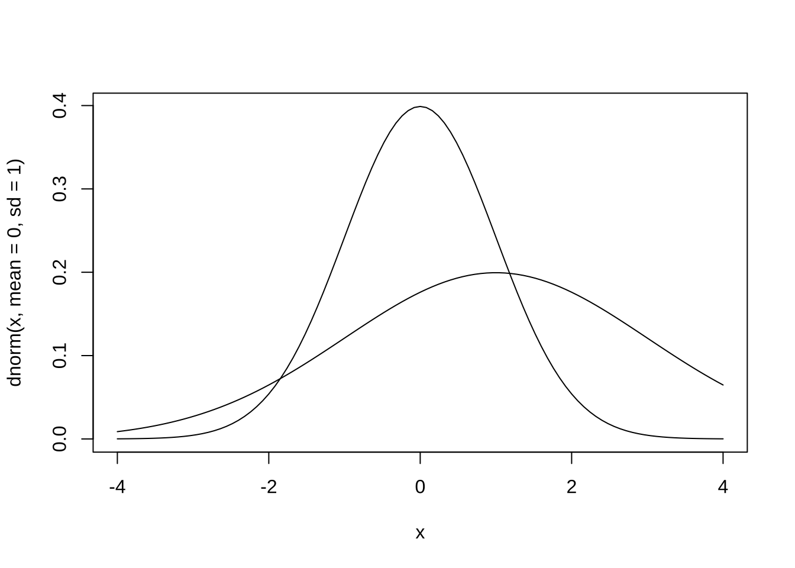
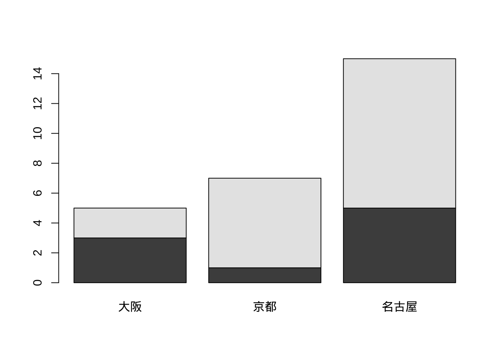
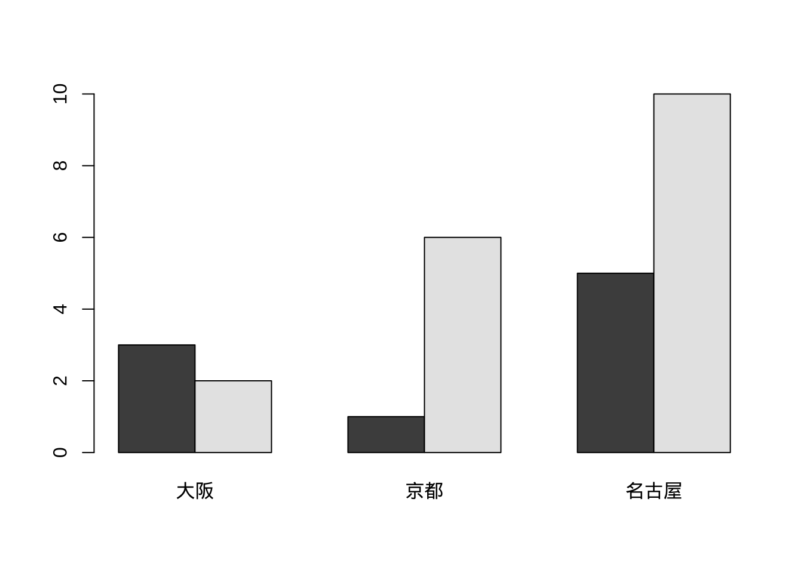
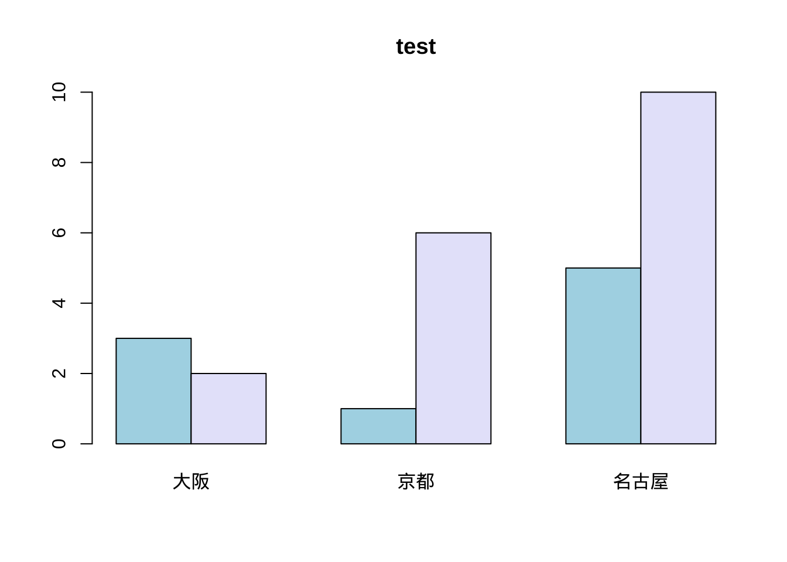
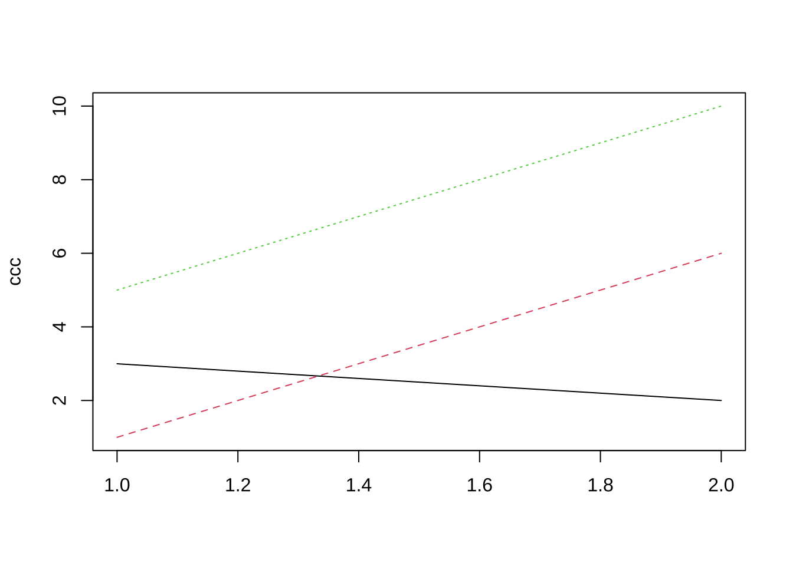
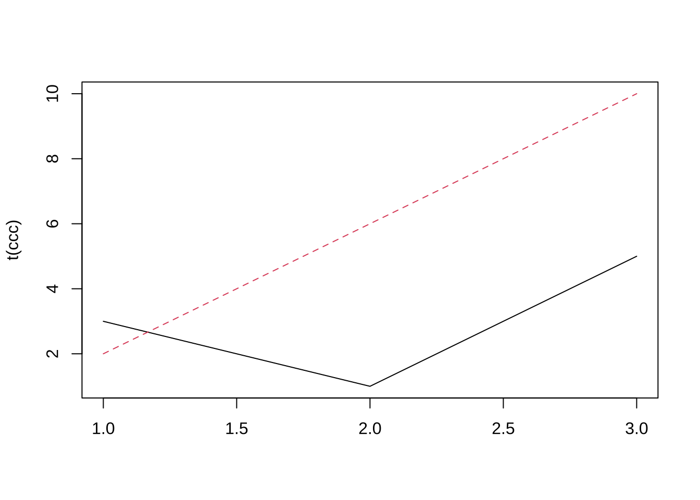
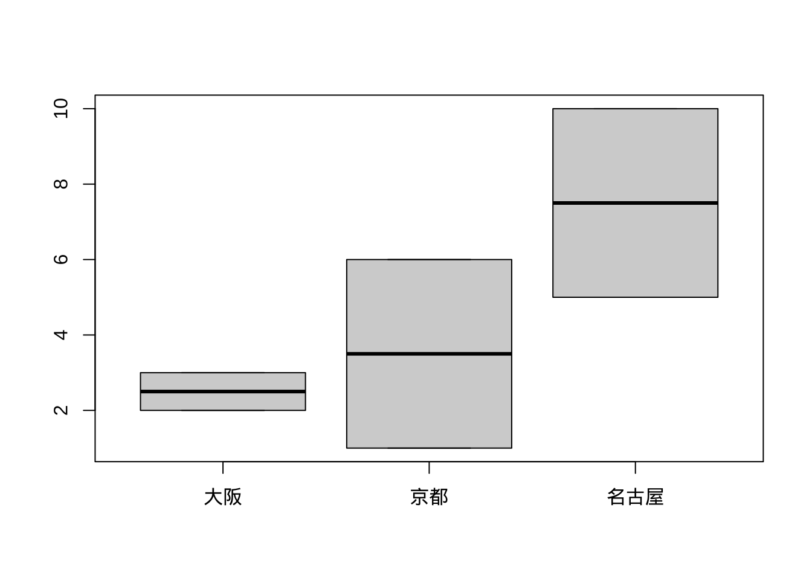
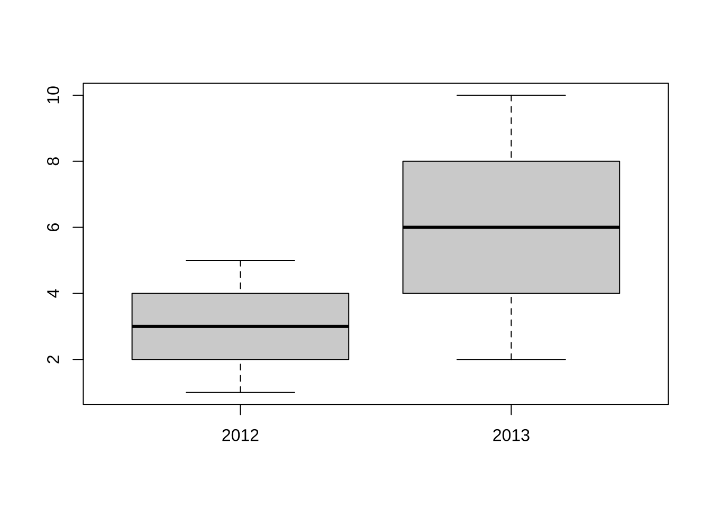

2 R言語の基本
2.1 Rの基本プログラミング
- 主な参考書籍:
- 金, 『Rによるデータサイエンス』, 森北出版
- 山田他, 『Rによるやさしい統計学』, オーム社
- http://minato.sip21c.org/swtips/R-jp-docs/R-intro-170.jp.pdf
- 本コースは, 基本的なRプログラミングにもっぱら限定
- よりモダンなプログラミング (本コース終了後) → tidyverse
- 例. 松村他, 『RユーザーのためのRStudio[実践]入門]』, 技術評論社
- (中級者以上) Rコーディングスタイルを気にすると良い
- 例. Google’s R Style Guide: https://google.github.io/styleguide/Rguide.html
2.1.1 基本操作
- 数値 (ベクトル), 演算の直接評価
- 変数xに値を格納. 変数xに対する演算
- 基本形: 変数名 <- 代入する値x <- c(1, 2, 3, 4, 5)
x <- c(1, 2, 3, 4, 5)
x
#> [1] 1 2 3 4 5
(x <- c(1, 2, 3, 4, 5)) # 代入と表示を同時に実行
#> [1] 1 2 3 4 5
x^2
#> [1] 1 4 9 16 25
x^2
#> [1] 1 4 9 16 25- xに関数を適用
mean(x)
#> [1] 3
var(x)
#> [1] 2.5
sd(x)
#> [1] 1.581139
summary(x)
#> Min. 1st Qu. Median Mean 3rd Qu. Max.
#> 1 2 3 3 4 5
# sqrt, summary, ...- その他, R言語の基本
- 空白は無視される
- Pythonと異なり, インデントは意味を持たない
- 一行に二つのコマンドを入力する場合は, 間をセミコロン(;)で区切る
- 行頭がシャープ(#)で始まる行は丸々無視される (コメント行)- R言語における処理の対象は, オブジェクト (object) と呼ばれる
- オブジェクトには名前が与えられる2.2 データの型や構造
ここで, R言語の基礎を理解するのに重要な二つの概念について, 初心者を念頭に正確性を犠牲にしながら概要について述べる. 実際はここでの記載よりもはるかに複雑で, 技術的にも難易度が高い. 包括的かつ技術的に正確な内容については, 例えば, https://adv-r.hadley.nz を参照されたい.
2.2.1 データの値の種類
Rでは, データの取る値の主要な種類 (type) として, 実数型 (double), 整数型 (integer), 文字列型 (character), 論理型 (logical) がある. また, 実数型, 整数型はまとめて数値型 (numeric) とも呼ばれる. 初心者は, 実数型と整数型の違いは気にしなくても良い.
2.2.2 データ構造とオブジェクト
Rでは, データ構造 (データの配置の仕方) の種類の主要なものとして, ベクトル (vector), リスト (list), 行列 (matrix), 配列(array), データフレーム (data frame) などがある. 分析に応じて, 適切なデータの構造にして処理を行う必要がある.
# ベクトル
c(3.14, 2.718)
c("KBS", "日吉")
# リスト
list("KBS", 1962L, 1:10)
# 行列
matrix(1:8, nrow = 2, byrow = T)
# 配列
arra(1:12, c(2, 3, 2))
# データフレーム
data.frame(name = c("Steve", "Top"), income = c(40000, 50000))ちなみに, これらのデータ構造には階層構造があり, 行列や配列はベクトルの特別な場合, リストはベクトルの特別な場合, データフレームはリストの特別な場合である. データフレームは, リスト (異なる種類のデータを同時に要素として持つ) でありながら, リストの各要素 (ベクトル) の長さが等しく, 2次元の行列の形式にデータが並べられたものである. R言語では, 内部的にはベクトルが処理単位の基本であるが, Rを用いた統計分析では, データフレームを用いるケースが非常に多いため, データフレームを使いこなすことが上達には欠かせない.
Rで分析を行う場合には, データや関数 (データ処理するための手続きを書いたコード) をオブジェクト (object) と呼ばれる”箱”に名前を付けて一旦格納し, その名前を呼び出す形で処理を実行するのが便利である. 量的変数や質的変数を同時に持つデータセットの分析には, データフレームが便利である. オブジェクトにはクラス (class) というオブジェクトの持つデータ構造の種類の属性が付与される.
特別な値
Rにおける分析において注意や対処が必要な, データの取り得る特別な値として, - NA (欠損値) - NULL (非存在) - NaN (非数値) - Inf (無限大)
これらの値をテストする関数が用意されている.
# NAの含まれている例
x <- c(1, NA, 3, 4, 5)
x == NA
#> [1] NA NA NA NA NA
is.na(x)
#> [1] FALSE TRUE FALSE FALSE FALSE
mean(x)
#> [1] NA
mean(x, na.rm = T)
#> [1] 3.252.2.3 ベクトル
# 以下は, 互いに等価
aaa <- c(2, 4, 6, 8) # 変数aaaに数値ベクトル(2,4,6,8)を割り当てる
aaa <- c(2, 4, 6, 8)
aaa <- seq(2, 8, 2)
c(2, 4, 6, 8) -> aaa
aaa <- 1:4 * 2
# assign('aaa', c(2, 4, 6, 8)) # 値を割り当てる際に, '環境'を指定することができる
# ベクトルの長さ
length(aaa)
# 文字列ベクトル
bbb <- c("東京", "埼玉", "千葉", "神奈川")
# ベクトルの各要素に名前 (ラベル) を付与
names(aaa) <- bbb
#> [1] 42.2.4 行列
ccc0 <- matrix(0, 3, 4) # 全要素0の3x4-行列
ccc <- matrix(c(3, 2, 1, 6, 5, 4), 2, 3) # 2x3-行列
ccc[1, 1] # (1, 1)成分
ccc[1, ] # 第1行(行ベクトル)
ccc[, 1] # 第1列(列ベクトル)
ccc[-2, ] # 2行目を除く → 2x4-行列
ccc[, -2] # 2列目を除く → 3x3-行列
dim(ccc)
nrow(ccc)
ncol(ccc) # セミコロン(;)により, 複数のコマンドを1行に収め, 順次実行
ccc[2, 3] <- 10 # (2, 3)成分に値10を代入
# 行列にラベルを付与
colnames(ccc) <- c("大阪", "京都", "名古屋") # 列ラベル
rownames(ccc) <- c("2012", "2013") # 行ラベル
ccc
t(ccc) # 転置
#> [1] 3
#> [1] 3 1 5
#> [1] 3 2
#> [1] 3 1 5
#> [,1] [,2]
#> [1,] 3 5
#> [2,] 2 4
#> [1] 2 3
#> [1] 2
#> [1] 3
#> 大阪 京都 名古屋
#> 2012 3 1 5
#> 2013 2 6 10
#> 2012 2013
#> 大阪 3 2
#> 京都 1 6
#> 名古屋 5 102.2.5 リスト
- ベクトル, 行列, 配列, リスト等の異なる型(&異なる長さ)のオブジェクトを一つにまとめたオブジェクト
L1 <- list(rep("A", 3), 1:0, matrix(1:8, 2, 4))
L1[[1]] # 1番目の要素(変数)の取り出し
k <- list(name = "Taro", salary = 50000, male = T)
k2 <- list("Taro", 50000, T) # 要素名 (タグ)なしの場合
k$sal # 要素名は省略形可
# リストはベクトルの一種 (recursive vector) 一方, 通常のベクトルはatomic vector
# (それ以上分解できない) vector()からリスト生成する場合
z <- vector(mode = "list")
z[["abd"]] <- 5
k[1:2] # 元のリストの部分リスト
k2 <- k[2]
class(k2)
str(k2)
k2a <- k[[2]] # 2番目の要素(変数)の取り出し (要素の型を持つ結果を返す)
# k[[1:2]]\t\t# --> エラー
class(k2a)
str(k2a)
#> [1] "A" "A" "A"
#> [1] 50000
#> $name
#> [1] "Taro"
#>
#> $salary
#> [1] 50000
#>
#> [1] "list"
#> List of 1
#> $ salary: num 50000
#> [1] "numeric"
#> num 50000- リストの要素追加・削除
z <- list(a = "abcd", b = 10)
z$c <- "piano"
z[[4]] <- 15
z[5:6] <- c(TRUE, FALSE)
z$b <- NULL
#
xxx <- 1:10
yyy <- 0.5 * xxx + rnorm(10)
lm.res <- lm(yyy ~ xxx)
is.list(lm.res)
lm.res[[1]]
lm.res$coef
lm.res["coefficients"]
#> [1] TRUE
#> (Intercept) xxx
#> -0.2496518 0.6145865
#> (Intercept) xxx
#> -0.2496518 0.6145865
#> $coefficients
#> (Intercept) xxx
#> -0.2496518 0.61458652.2.6 データフレーム
- リストの特別な場合
- 長さが等しい複数のベクトルを要素に持つリスト
- 数値と文字列などの異なるデータが混在するデータを行列のように扱える
- Rにおける様々な統計分析において多用される
kids <- c("taro", "hanako")
ages <- c(10, 8)
d <- data.frame(kids, ages, stringsAsFactors = FALSE)
# 注: stringsAsFactors = T: 文字ベクトルをfactorとして扱う
d
str(d)
# 以下の3つは等価な操作
d[[1]] # データフレームの第1列 (リストの一番目の要素) を取り出す(→ 文字列ベクトル)
d$kids # 変数(kids)のように取り出す
d[, 1] # 行列のように操作 (--> 便利)
# ただし,
d[1] # 第1列をデータフレーム (リスト) として取り出す
df1 <- data.frame(letters[1:3], 3:1)
rownames(df1) <- c("大阪", "京都", "名古屋")
colnames(df1) <- c("方言種類", "順位")
class(df1)
is.vector(df1)
#> kids ages
#> 1 taro 10
#> 2 hanako 8
#> 'data.frame': 2 obs. of 2 variables:
#> $ kids: chr "taro" "hanako"
#> $ ages: num 10 8
#> [1] "taro" "hanako"
#> [1] "taro" "hanako"
#> [1] "taro" "hanako"
#> kids
#> 1 taro
#> 2 hanako
#> [1] "data.frame"
#> [1] FALSE2.3 データの操作・演算
2.3.1 ベクトルの結合, ソート
vec1 <- 1:4
vec2 <- 2:5
rbind(vec1, vec2) # ベクトルの行方向への結合
cbind(vec1, vec2) # べクトルの列方向への結合
vec3 <- c(2, 5, 1, 3)
sort(vec3) # 昇順
rev(vec3) # 順番を逆転させる
ccc[, order(ccc["2012", ])]
ccc[, sort.list(ccc["2012", ])]
#> [,1] [,2] [,3] [,4]
#> vec1 1 2 3 4
#> vec2 2 3 4 5
#> vec1 vec2
#> [1,] 1 2
#> [2,] 2 3
#> [3,] 3 4
#> [4,] 4 5
#> [1] 1 2 3 5
#> [1] 3 1 5 2
#> 京都 大阪 名古屋
#> 2012 1 3 5
#> 2013 6 2 10
#> 京都 大阪 名古屋
#> 2012 1 3 5
#> 2013 6 2 102.4 R関数
2.4.3 確率分布
# dxxx(q) # 確率密度, q:確率点
# pxxx(q) # 累積確率, q:確率点
# qxxx(p) # 確率点, p:確率
# rxxx(n) # 乱数, n:個数
# ------------------------------------------------------------------
# xxx部分:
# unif(x, min, max) # 一様分布
# norm(x, mean, sd) # 正規分布
# exp(x, rate) # 指数分布
# binom(x, size, prob) # ２項分布
# pois(x, lambda) # ポアソン分布
# t(x, df) # t分布
# chisq(x, df) # カイ2乗分布
# f(x, df1, df2) # F分布curve(xを含んだ式, from = xの左端点, to = xの右端点)
# 関数のグラフ描画curve(dnorm(x, mean = 0, sd = 1), from = -4, to = 4)
curve(dnorm(x, mean = 1, sd = 2), from = -4, to = 4, add = T)
2.5 データの可視化








# install.packages('car') library(car) scatterplot(ccc) install.packages('scatterplot3d');
# library(scatterplot3d) scatterplot3d
# その他のグラフ coplot; mosaic plot; stars; faces; persp; image; contour
# その他 windows()\t\t#新しいグラフィック・ウィンドウを開く par(mfrow = c(2, 2))
# より洗練されたグラフ. やや難易度が高い. cf. [3], p.79 install.packages('ggplot2',
# dependencies = T) library(ggplot2)2.6 ファイル入出力
2.6.1 テキストファイル読み込み
- ファイル読み込み用のR関数には, ファイルの格納場所 (パス) とファイル名を知らせる必要がある
- パスを省略すると, 現在のディレクトリ (getwd関数で確認可能) 下でファイルを探す. もし, 存在しなければ, エラーとなる
- ここでは, あらかじめ, 各自のPCのデスクトップ上に, “BS_2022”という名前のフォルダ (ディレクトリ) を作成していると想定
- ファイルは, カンマ(, )で区切られたcsv形式や, タブで区切られたtsv形式の テキストファイルであるとする.
data1 <- read.table("/[パス名]/ファイル名", header = T, row.names = 1)
# オプション
# header = T: 1行目が列ラベル
# row.names = 1: 1列目が行ラベル- または, file.path関数を使ってファイルの格納されているパス(経路)を指定しても良い.
# ユーザー(yamada)が, デスクトップ(Desktop)フォルダの下に授業用フォルダ(BS_2022)を作成した場合のパスの指定
fpath <- file.path("~", "Desktop", "BS_2022")
# または
fpath <- file.path("Users", "yamada", "Desktop", "BS_2022")
#
ifile <- file.path(fpath, ")# 例えば, data1 <- read.table('/Users/[アカウント名]/Desktop/BS_2022/data.txt', sep = ', ')
# または data1 <- read.csv('/Users/[アカウント名]/Desktop/BS_2022/data.txt', header = T,
# row.names = 1)
# 代替的に data2 <- scan('/Users/[アカウント名]/Desktop/BS_2022/data.txt', sep = ', ')
# matrix(scan('/Users/[アカウント名]/Desktop/BS_2022/data.txt', sep = ', '), 3, 4, byrow =
# T) matrix(scan('/Users/[アカウント名]/Desktop/BS_2022/data.txt', sep = ', '), 3, 4)
# scan()において, 数値, 文字が混在している場合, 列ごとにデータ属性を指定する必要 data2.txt
# a 1 2 b 2 3 c 3 4 data3 <- scan('/Users/[アカウント名]/Desktop/BS_2022/data.txt', sep =
# ', ', list(x = '', y = 0, z = 0)) data.frame(data2)\t\t# データフレーム化
# パスを指定せずに, テキストファイルの置かれているフォルダに移動してから
# ファイル名のみを使って読み込んでも良い setwd('/Users/[アカウント名]/Desktop/BS_2022')
data1 <- read.table("data.txt", sep = ", ")
# パッケージ'foreign'により, SAS, SPSS等のファイル形式のデータの読み込みが可能